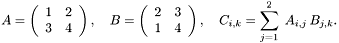
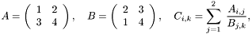
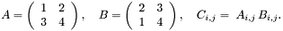
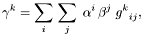
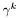

![\[ A = \left(\begin{array}{cc} 1 & 2 \\ 3 & 4 \end{array}\right), \quad B = \left(\begin{array}{cc} 2 & 3 \\ 1 & 4 \end{array}\right), \quad C_{j} = \sum_{i=1}^2 \;A_{i,j}\,B_{i,j}. \]](form_198.png)
The variable type tensor is introduced with CLUScript v2.2 and implemented in CLUCalc v4.2. In the long run this tensor type will probably replace the matrix type since it is much more general and more convenient to work with. For the moment, both types exist in parallel, though.
In the following I mean by the valence of a tensor, its number of indices. This is often also refered to as the rank of a tensor. However, I would like to reserve to term rank for the meaning it has for matrices.
A tensor variable is basically a multi-dimensional array of scalar values. The nice feature of working with tensor variables is that implicit summations over indices can be expressed rather succinctly, as will be shown in section Implicit Loops.
?T = Tensor(3, [2,3,4]);
This generates the following output
T (2x3x4) =
| 0 | 0 | 0 | 0 |
| 0 | 0 | 0 | 0 |
| 0 | 0 | 0 | 0 |
| 0 | 0 | 0 | 0 |
| 0 | 0 | 0 | 0 |
| 0 | 0 | 0 | 0 |
It is also possible to create a tensor directly from a list or from a matrix.
This generates the output
T1 (2x2x3) =
| 1 | 2 | 3 |
| 2 | 3 | 4 |
| 4 | 5 | 6 |
| 5 | 6 | 7 |
T2 (2x3) =
| 0 | 0 | 0 |
| 0 | 0 | 0 |
T = Tensor([[[1,2,3],[2,3,4]], [[4,5,6], [5,6,7]]]); ?T(2,1,3); T(1,1,1) = 10; ?T;
has the output
Constant = 6
T (2x2x3) =
| 10 | 2 | 3 |
| 2 | 3 | 4 |
| 4 | 5 | 6 |
| 5 | 6 | 7 |
+, -, * and / are defined between tensor variables and scalars. Operations between tensors are explained in Implicit Loops. For example,
?T = Tensor([[1,2,3],[4,5,6]]); ?"T + 1 = " + (T + 1); ?"1 - T = " + (1 - T); ?"T * 2 = " + (T * 2); ?"T / 2 = " + (T / 2); ?"2 / T = " + (2 / T);
The output is
T (2x3)=
| 1 | 2 | 3 |
| 4 | 5 | 6 |
| 2 | 3 | 4 |
| 5 | 6 | 7 |
| 0 | -1 | -2 |
| -3 | -4 | -5 |
| 2 | 4 | 6 |
| 8 | 10 | 12 |
| 0.5 | 1 | 1.5 |
| 2 | 2.5 | 3 |
| 2 | 1 | 0.667 |
| 0.5 | 0.4 | 0.333 |
In order to make full use of tensor variables, you need to know about the generation of implicit loops by using counting indices. There are two different types of counting indices: contraction- and point-indices. Contraction-indices are negative integer values, while point-indices are values between -1 and 0. Contraction indices have the effect of generating a summation loop over the range of the respective index as is explained in Tensor Contraction. Point-indices on the other hand, imply a loop over all values of an index, but there is no implicit summation. This is explained in more detail in Point Indices.
?T = Tensor([[1,2,3],[4,5,6]]); ?T(1, -1); ?T(-1, 1);
The output is
T (2x3)=
| 1 | 2 | 3 |
| 4 | 5 | 6 |
| 1 | 2 | 3 |
| 1 | 4 |
That is, the expression ?T(1, -1) prints the values of T in the first row, while ?T(-1, 1) prints the first column. Basically, the idea of counting indices is that when an operation is applied to an expression like T(-1, 1), then it is applied to the set of elements that are contained in T when counting through all allowed values of the first index.
A = Tensor(2, [2,3]); A(1, -1) = 2; ?A;
gives
A (2x3) =
| 2 | 2 | 2 |
| 0 | 0 | 0 |
That is, all elements in the first row of A are set to the value 2. Only setting the diagonal values can be done in the following way
A = Tensor(2, [2,3]); A(-1, -1) = 2; ?A;
which gives
A (2x3) =
| 2 | 0 | 0 |
| 0 | 2 | 0 |
One can also assign parts of one tensor to parts of another tensor.
This generates the following output.
A (2x2) =
| 1 | 2 |
| 4 | 4 |
C (2) =
| 1 | 2 |

This results in
A (2x2) =
| 1 | 2 |
| 3 | 4 |
| 2 | 3 |
| 1 | 4 |
| 4 | 11 |
| 10 | 25 |
Hence, there is an implicit summation over the index values at the positions where a repeated negative appears. It may also help to define some integer variables to simplify the CLUScript expression. For example,
i = -1; j = -2; k = -3;
A = Tensor([[1,2], [3,4]]);
B = Tensor([[2,3], [1,4]]);
C = A(i, j) * B(j, k);
This has the same effect as the previous example, since there will be a contraction over the index j. Note that the order of the elements in C is according to the values of the counting indices. That is, in the above example -1 is the first dimension of C and -3 the second dimension. Hence, D = A(k, j) * B(j, i) generates a tensor that is transposed with respect to tensor C.
Note that instead of contracting with a product, this can also be done with division. For example, the equivalent to the mathematical expressions

is the following CLUScript.
The output is
A (2x2)=
| 1 | 2 |
| 3 | 4 |
| 2 | 3 |
| 1 | 4 |
| 2.5 | 0.833 |
| 5.5 | 2 |

The corresponding CLUScript looks like this
which generates the output
A (2x2) =
| 1 | 2 |
| 3 | 4 |
B (2x2) =
| 2 | 3 |
| 1 | 4 |
C (2x2) =
| 2 | 6 |
| 3 | 16 |
It is also possible to mix contraction- and point-indices. For example, suppose you would like to evaluate the scalar product between corresponding column vectors in two tensors. Mathematically this can be written as
The corresponding CLUScript looks like this.
which generates the output
A (2x2) =
| 1 | 2 |
| 3 | 4 |
B (2x2) =
| 2 | 3 |
| 1 | 4 |
C (2) =
| 5 | 22 |
?A = Tensor([[1,2,3,4], [5,6,7,8]]); ?A(-1, [-2,1,3]); // Range for -2 ?A(-1, [-2, [1,3,4]]); // Index List
This generates the output
A (2x4) =
| 1 | 2 | 3 | 4 |
| 5 | 6 | 7 | 8 |
Constant (2x3) =
| 1 | 2 | 3 |
| 5 | 6 | 7 |
Constant (2x3) =
| 1 | 3 | 4 |
| 5 | 7 | 8 |
?T = Tensor([[2,0,0], [0,1,0]]); ?S1 = T - 1; ?S2 = 1 - T;
which generates the output
T (2x3)=
| 2 | 0 | 0 |
| 0 | 1 | 0 |
| 1 | -1 | -1 |
| -1 | 0 | -1 |
| -1 | 1 | 1 |
| 1 | 0 | 1 |
That is, subtracting a constant from a tensor, subtracts it from each component of the tensor. This, of course, also works when using counting indices. Here is an example where a tensor is subtracted from its transpose.
?T = Tensor([[1,2], [3,4]]); ?S = T(-2,-1) - T(-1,-2);
The output is
T (2x2)=
| 1 | 2 |
| 3 | 4 |
| 0 | 1 |
| -1 | 0 |

where the  denote the components of the resultant multivector, and  denotes the components of the tensor encoding the geometric product. This translation of geometric algebra operations into tensor contractions allows the application of linear algebra solution methods to geometric algebra.
denotes the components of the tensor encoding the geometric product. This translation of geometric algebra operations into tensor contractions allows the application of linear algebra solution methods to geometric algebra.
Note that equations of the above type could also be evaluated in CLUScript before by using the function GetMVProductMatrix(). However, using this function the product tensor could not be obtained by itself, but only its contraction with a vector, which results in a matrix. If we want to treat more complex equation using tensor, we need to be able to deal with the product tensors themselves.
The above calculation can be performed in CLUScript using tensors in the following way.
vA = VecE3(1,2,0); vB = VecE3(2,0,3); // Transformation of multivector into tensor tA = MV2Tensor(vA); // Column vector tB = MV2Tensor(vB); // Column vector // Print first column as row ?tA(-1,1); ?tB(-1,1); // Generate geometric product tensor for // 3D-Euclidean space tG = GAOpTensor(GA_E3, MVOP_GEO); ?"Size of tG = " + Str(Size(tG)); // Contraction of vectors with tensor ?tC = tA(-1,1) * tB(-2,1) * tG(-3,-1,-2); // Transformation of tensor into multivector ?vC = Tensor2MV(tC); ?vA * vB;
This generates the output
Constant (8) =
| 0 | 1 | 2 | 0 | 0 | 0 | 0 | 0 |
Constant (8) =
| 0 | 2 | 0 | 3 | 0 | 0 | 0 | 0 |
Size of tG = [ 8 , 8 , 8 ]
tC (8) =
| 2 | 0 | 0 | 0 | 6 | -3 | -4 | 0 |
vC (1) =
[ 2 + 6 e23 + -3 e31 + -4 e12 ]
Constant = 2 + 6 e23 + -3 e31 + -4 e12
The variables tA and tB are tensors of dimensions 8x1, i.e. they are column vectors. The tensor tG has dimension 8x8x8. The contraction of the vectors with the tensor is equivalent to the geometric product of the corresponding multivectors. It is also possible to pass a list of vectors to MV2Tensor(), in which case a tensor is created that contains the components of the multivectors in its columns. The following script generates the same output as the previous one.
// Create list of multivectors lVec = []; lVec << VecE3(1,2,0); lVec << VecE3(2,0,3); // Transformation of multivectors into tensor. // The multivectors form the columns of the tensor. tVec = MV2Tensor(lVec); // Print columns separately as rows ?tVec(-1,1); ?tVec(-1,2); // Generate geometric product tensor for // 3D-Euclidean space tG = GAOpTensor(GA_E3, MVOP_GEO); ?"Size of tG = " + Str(Size(tG)); // Contraction of vectors with tensor ?tC = tVec(-1,1) * tVec(-2,2) * tG(-3,-1,-2); // Transformation of tensor into multivector ?vC = Tensor2MV(tC); // Geometric product of all vectors in list lVec. ?prod(lVec);
// Create list of multivectors lVec = []; lVec << VecE3(1,2,0); lVec << VecE3(2,0,3); // Mask for vectors lVecMask = [ 0, // Scalar 1, 2, 3, // Vector 0, 0, 0, // Bivector 0 // Trivector ]; // Transformation of multivectors into tensor. // The multivectors form the columns of the tensor. tVec = MV2Tensor(lVec, lVecMask); // Print columns separately as rows // There are only three components now ?tVec(-1,1); ?tVec(-1,2); // Generate geometric product tensor for // 3D-Euclidean space using mask. lResMask = 0; tG = GAOpTensor(GA_E3, MVOP_GEO, lVecMask, lVecMask, lResMask); ?"Size of tG = " + Str(Size(tG)); ?"Result Mask = " + Str(lResMask); // Contraction of vectors with tensor ?tC = tVec(-1,1) * tVec(-2,2) * tG(-3,-1,-2); // Transformation of tensor into multivector ?vC = Tensor2MV(tC, lResMask); // Geometric product of all elements in lVec ?prod(lVec);
This generates the output
Constant (3)=
| 1 | 2 | 0 |
| 2 | 0 | 3 |
| 2 | 6 | -3 | -4 |
Constant = 2 + 6 e23 + -3 e31 + -4 e12
The variable lVecMask is a list with eight entries, relating to the eight dimensions of the Geometric Algebra of 3D-Euclidean space. In the above example lVecMask is defined such that the entries relating to the vector components are given consecutive non-zero values. The tensors generated from the multivectors by using this mask, then only contain the three vector components.
The tensor representing the geometric product has to have different dimensions now as well. Therefore, the mask used to generate the tensor tVec has to be specified in the function GAOpTensor(). This function takes as last parameter a variable that either already contains a result mask, or in which the resultant mask will be stored. In the above example lResMask is set to zero, which tells the function GAOpTensor() that it should set this variable to the resultant mask. The resultant mask depends on the two other masks given. It basically describes, which components in a multivector can at most be non-zero under the given operation. In the above example the two mask lVecMask specifies that the left and right operands of the geometric products will be vectors. It then follows that the result of the geometric product will generate a multivector that has at most a scalar and three bivector components. Hence, the result mask in lResMask.
The geometric product is then executed by contraction of the two vectors in tVec with the geometric product tensor tG. Note that tG is now of dimensions 4x3x3. In order to transform the resultant tensor tC back into a multivector the resultant mask lResMask has to be given in the function Tensor2MV().
If we were only interested in a particular subset of components of the resultant multivector, we could have also specified lResMask accordingly before a call to GAOpTensor().